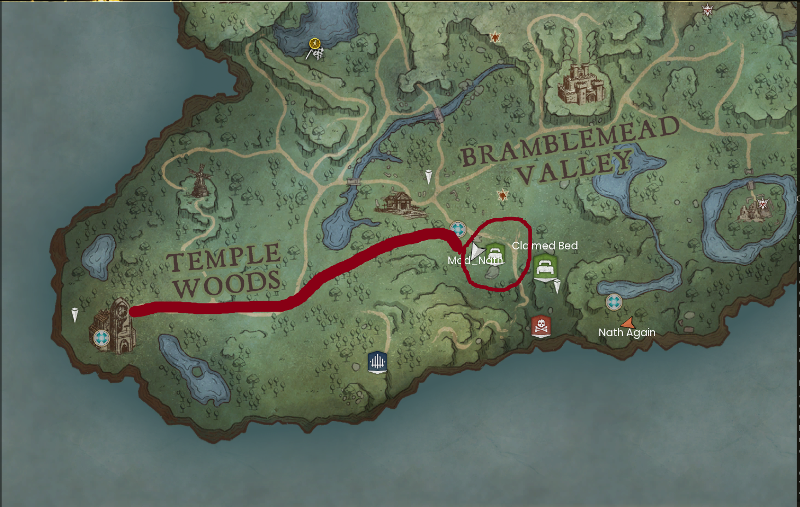
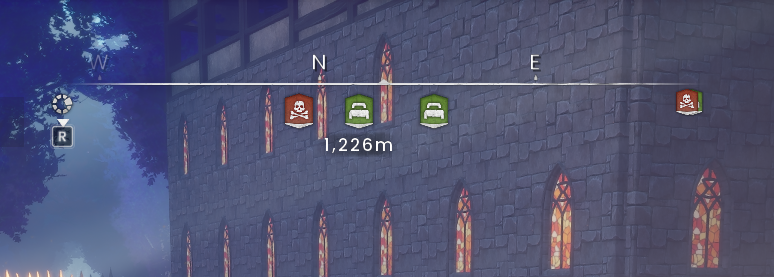

Find basecamp
A practical route from Temple Woods to the DragonInfinity clan village.
The route at a glance


Walk the route
- Start at the temple ruins on the western edge of the map. Open your map and identify your own player marker.
- Travel east through Temple Woods. Use the red line as the broad direction, choosing walkable ground around trees and rocks.
- Turn north-east towards the circled area. It sits south of the large Bramblemead Valley label, close to the cluster of bed icons in the supplied map.
- Ask for a meet-up if you lose the route. Share a screenshot of your map or describe the nearest named location. Do not continue into unfamiliar dangerous terrain just because it appears to be a shortcut.
- At camp, check before claiming a bed or using storage. Ask the host or a player to show you communal supplies and workstations.
This is an orientation guide from the host’s annotated image, not a measured turn-by-turn route. The red stroke does not identify every path junction.
Use your compass


Face the marker you want to follow, then keep checking whether its distance is decreasing. If you reach a cliff, water or enemies, go around and recheck the map. A compass direction does not guarantee a safe straight-line path.
Make the return easy
Before leaving, identify your bed marker and mark camp if your map allows it. Keep a mental note of the last landmark you passed. On a first trip, turn back while you still have food and working equipment.
Further reading
For exact requirements, detailed walkthroughs and more depth, visit the topic pages below.